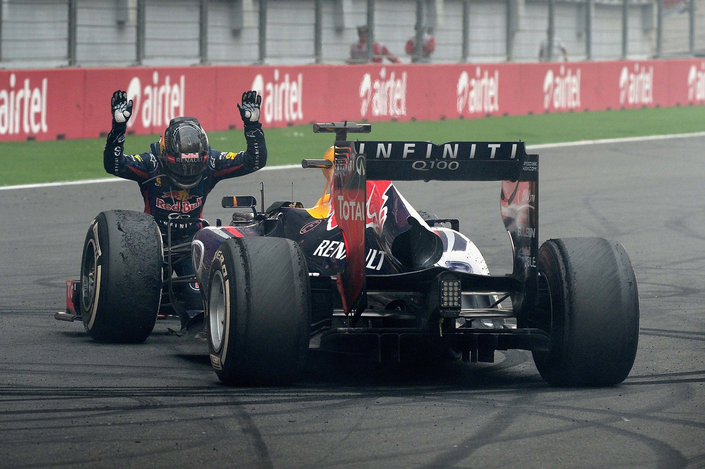

Sebastian Vettel F1 Statistics
| Statistics | |
| Nationality | German |
| 2022 Team | Aston Martin Aramco Mercedes |
| Entries | 296 (295 starts) |
| Chamionships | 4 (2010,2011,2012,2013) |
| Wins | 53 |
| Podiums | 122 |
| Career Points | 3093 |
| Pole Positions | 57 |
| Fastest Laps | 38 |
| First Entry | 2007 United States Grand Prix |
| Latest Win | 2019 SIngapore Grand Prix |
| Latest entry | 2022 Japanese Grand Prix |
| 2021 Position | 12th (43 pts) |